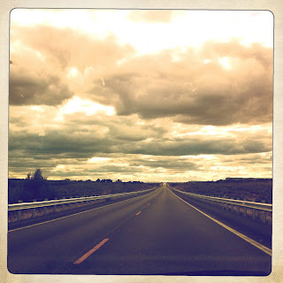

Recovered weblog entry
The long road ahead

Both figuratively and literally, I suppose. Lens: Lucas AB2
Film: Ina's 1969

Recovered weblog entry

Both figuratively and literally, I suppose. Lens: Lucas AB2
Film: Ina's 1969